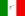

De: La Frikipedia, la enciclopedia extremadamente seria.
De: La Frikipedia, la enciclopedia extremadamente seria. De: La Frikipedia, la enciclopedia extremadamente seria.
| De la serie deportes para todos: | |||
| Supra lija de formiula | |||
| |||
| Número de practicantes | Ya no hay. | ||
| ¿Deporte Olímpico? | Nop | ||
| Campeonatos | Pílotos, clubes y escuderías | ||
| ¿Donde se practica? | Yurop, a veces Asia y casi alguna parte de América | ||
| ¿Control anti-dopping? | No se | ||
| Riesgo de muerte | ↑↑↑↑↑ | ||
| Árbitro | Alguien | ||
| Hinchas | Hay aun, pero cada vez hay menos | ||
La Superleague Fórmula también denominada como Super lija de formiula en unas islas al azar, fue otro intento de dominación mundial competición de Donington Park y terminó el 2011, en Zolder y antes de lo previsto.
Esta competición se fusionan 2 deportes, el Suena-a-gol: una petrolera angoleña que también fue el suministrador de combustible. En Abril de 2012 no hubo ni noticia ni na' si habría una nueva temporada y tampoco para el 2013, cada vez se pone mas dudosa la continuación de la masacre competición de cosas raras con 4 objetos echos de caucho
Uno de sus atractivos es su clasificación único, que daban vuelta toda la parrilla para la carrera 2 y la final. También ofreció un gran monto de moni, ya que con ganar el campeonato, al clú y a la escudería ganadora le daban 1 millón de leros, el subcampeón se lleva 500 mil y el tercero 250 mil.
Las orgías clasificaciones se llevan a cabo los sábados (como en casi cualquier competición)
Pues el procedimiento es como una copa de furbo
Primera fase, cuartos de final, semifinal y final.
Carrera 1 y 2
Pues el que se mantiene mas alto durante 45 minutos gana la primera y en la segunda se da vuelta la parrilla inicial y nada mas. Muy furbolero
| Posición |
1º | 2º | 3º | 4º | 5º | 6º | 7º | 8º | 9º | 10º | 11º | 12º | 13º | 14º | 15º | 16º | 17º | 18º | 19º | 20º | 21º | 22º | Ret |
|---|---|---|---|---|---|---|---|---|---|---|---|---|---|---|---|---|---|---|---|---|---|---|---|
| Pu(n)tos | 50 | 45 | 40 | 36 | 32 | 29 | 26 | 23 | 20 | 18 | 16 | 14 | 12 | 10 | 8 | 7 | 6 | 5 | 4 | 3 | 2 | 1 | Cerapio |
| Clús de furbo participantes | Selecciones de furbo Participantes | |||||
|---|---|---|---|---|---|---|
| America | Asia | Yurop | ||||
|
 Hace Milanesa |
PeroEseVeh y EsJoven |
Australia
| ||||
| | |||
|---|---|---|---|
|
Deportes
Deportistas
Competiciones
Otros
Artes Marciales
|
Autor(es):